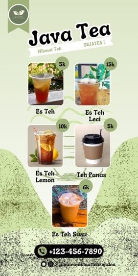

Java Tea

Tentang Kami
CV. Solusi Tea Indonesia
Jl. Gedong No.52 , Jakarta Timur
Visi dan Misi
Visi:
Menjadikan teh Indonesia sebagai produk budaya saing tinggi yang bisa menjangkau semua kalangan dengan tampilan kekinian
Misi:
Memfasilitasi dan mendorong peningkatan produktivitas tanaman, serta meningkatkan bisnis teh dan sektor penunjang
Mendorong usaha industri teh yang dapat memberikan nilai tambah
Mempromosikan teh Indonesia dan berusaha untuk memenuhi harapan konsumen domestik dan internasional
Layanan
Franchise
Pemesanan Online :
Gojek
Grab
Hubungi Kami
E-mail
:
marketing@email.com
Phone
:
+62866 3546 3425